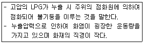
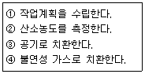
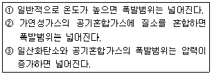
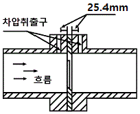
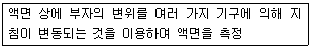

가스산업기사 (2013-03-10 기출문제)
1과목: 연소공학
1. 가스의 폭발범위에 영향을 주는 요인이 아닌 것은?
- 온도
- 조성
- 압력
- 비중
(정답률: 74%)

2. 공기 중에서 연소하한 값이 가장 낮은 가스는?
- 수소
- 부탄
- 아세틸렌
- 에틸렌
(정답률: 84%)
3. 액체 프로판(C3H8) 10㎏이 들어 있는 용기에 가스 미터가 설치되어 있다. 프로판 가스가 전부 소비되었다고 하면 가스미터에서의 계량 값은 약 몇 m3로 나타나 있겠는가? (단, 가스미터에서의 온도와 압력은 각각 T=15℃와 P1=200mmHg이고 대기압은 0.101㎫이다.)
- 5.3
- 5.7
- 6.1
- 6.5
(정답률: 39%)
4. 불활성화에 대한 설명으로 틀린 것은?
- 가연성혼합가스에 불활성가스를 주입하여 산소의 농도를 최소산소농도 이하로 낮게 하는 공정이다.
- 인너트 가스로는 질소, 이산화탄소 또는 수증기가 사용된다.
- 인너팅은 산소농도를 안전한 농도로 낮추기 위하여 인너트 가스를 용기에 처음 주입하면서 시작한다.
- 일반적으로 실시되는 산소농도의 제어점은 최소산소농도보다 10% 낮은 농도이다.
(정답률: 74%)
5. 열역학 제 1법칙을 바르게 설명한 것은?
- 제2종 영구기관의 존재가능성을 부인하는 법칙이다.
- 열은 다른 물체에 아무런 변화도 주지 않고 저온물체에서 고온물체로 이동하지 않는다.
- 열평형에 관한 법칙이다.
- 에너지 보존법칙 중 열과 일의 관계를 설명한 것이다.
(정답률: 82%)
6. 층류예혼합화염은 연소 특성을 결정하는 요소로서 가장 거리가 먼 것은?
- 연료와 산화제의 혼합비
- 압력 및 온도
- 연소실 용적
- 혼합기의 불리·화학적 특성
(정답률: 73%)
7. 중유의 지열발열량이 10000 ㎉/㎏의 연료 1㎏를 연소 시킨 결과 연소열은 5500 ㎉/㎏이었다. 연소효율은 얼마인가?
- 45%
- 55%
- 65%
- 75%
(정답률: 84%)
8. 다음 보기는 가스의 화재 중 어떤 화재에 해당하는가?

- 제트 화재(Jet Fire)
- 풀 화재(Pool Fire)
- 플래시 화재(Flash Fire)
- 인퓨젼 화재(infusion fire)
(정답률: 77%)
9. BLEVE 현상이 일어나는 경우는?
- 비점 이상에서 저장되어 있는 휘발성이 강한 액체가 누출되었을 때
- 비점 이상에서 저장되어 있는 휘발성이 약한 액체가 누출되었을 때
- 비점 이하에서 저장되어 있는 휘발성이 강한 액체가 누출되었을 때
- 비점 이하에서 저장되어 있는 휘발성이 약한 액체가 누출되었을 때
(정답률: 75%)
10. 메탄올 96g과 아세톤 116g을 함께 진공상태의 용기에 넣고 기화시켜 25℃의 혼합기체를 만들었다. 이때 전압력을 약 몇 mmHg인가? (단, 25℃에서 순수한 메탄올과 아세톤의 증기압 및 분자량은 각각 96.5mmHg, 56mmHg 및 32, 58이다.)
- 76.3
- 80.3
- 52.5
- 70.5
(정답률: 65%)
11. 다음 중 조연성 가스에 해당하지 않는 것은?
- 공기
- 염소
- 탄산가스
- 산소
(정답률: 71%)
12. 폭굉이 발생하는 경우 파면의 압력은 정상연소에서 발생하는 것보다 일반적으로 얼마나큰가?
- 2배
- 6배
- 8배
- 10배
(정답률: 79%)
13. 과열증기의 온도가 350℃일 때 과열도는? (단, 이증기의 포화온도는 573K이다.)
- 23K
- 30K
- 40K
- 50K
(정답률: 72%)
14. 온도 30℃ 압력 740mmHg인 어떤 기체 342㎖를 표준상태(0℃, 1기압)로 하면 약 몇 ㎖가 되겠는가?
- 300
- 315
- 350
- 390
(정답률: 49%)
15. 화재는 연소반응이 계속하여 진행하는 것으로 이 경우에 반응열이 주위의 가연물에 전해지는데, 이때 흡열량이 큰 물질을 가함으로서 화염 중의 반응열을 제거시켜 연소반응을 완만하게 하면서 정지시키는 소화방법은?
- 냉각소화
- 회석소화
- 화염의 불안점화에 의한 소화
- 연소일제에 의한 소화
(정답률: 80%)
16. 실제가스가 이상기체 상태방정식을 만족하기 위한 조건으로 옳은 것은?
- 압력이 낮고, 온도가 높을 때
- 압력이 높고, 온도가 낮을 때
- 압력과 온도가 낮을 때
- 압력과 온도가 높을 때
(정답률: 83%)
17. 용기의 한 개구부로부터 퍼지가스를 가하고 다른 개구부로부터 대기 또는 스크러비로 혼합가스를 용기에서 축출시키는 공정은?
- 압력퍼지
- 스위프피지
- 사이폰퍼지
- 진공퍼지
(정답률: 80%)
18. 다음 중 자기연소를 하는 물질로만 나열된 것은?
- 경유, 프로판
- 질화면, 셀룰로이드
- 황산, 나프탈렌
- 석탄, 플라스틱(FRP)
(정답률: 85%)
19. 소화의 원리에 대한 설명으로 틀린 것은?
- 가연성 가스나 가연성 증기의 공급을 차단시킨다.
- 연소 중에 있는 물질에 물이나 냉각제를 뿌려 온도를 낮춘다.
- 연소 중에 있는 물질에 공기를 많이 공급하여 혼합기체의 농도를 높게 한다.
- 연소 중에 있는 물질의 표면에 불활성가스를 덮어 씌워 가연성 물질과 공기의 접촉을 차단시킨다.
(정답률: 86%)
20. 가연성 물질을 공기로 연소시키는 경우에 공기 중의 산소농도를 높게 하면 연소속도와 발화온도는 어떻게 되는가?
- 연소속도는 느리게 되고, 발화온도는 높아진다.
- 연소속도는 빠르게 되고, 발화온도도 높아진다.
- 연소속도는 빠르게 되고, 발화온도는 낮아진다.
- 연소속도는 느리게 되고, 발화온도는 낮아진다.
(정답률: 84%)
2과목: 가스설비
21. 펌프용 윤활유의 구비 조건으로 틀린 것은?
- 인화점이 낮을 것
- 분해 및 탄화가 안 될 것
- 온도에 따른 점성의 변화가 없을 것
- 사용하는 유체와 화학반응을 일으키지 않을 것
(정답률: 79%)
22. 펌프에서 일어나는 현상으로 유수 중에 그 수온의 증기압보다 낮은 부분이 생기면 물이 증발을 일으키고 기포를 발생하는 현상을 무엇이라고 하는가?
- 베이퍼록 현상
- 수격 현상
- 서징 현상
- 공동 현상
(정답률: 64%)
23. 용량이 50㎏/h인 LPG용 2단 감압식 1차용 조정기의 입구압력(㎫)의 범위는 얼마인가?
- 0.07~1.56
- 0.1~1.56
- 0.3~1.56
- 조정압력 이상~1.55
(정답률: 66%)
24. LP가스 집합공급설비의 배관설계 시 기본사항에 해당되지 않는 것은?
- 사용목적에 적합한 기능을 가질 것
- 사용상 안전할 것
- 고장이 적고 내구성이 있을 것
- 가스 사용자의 선택에 따를 것
(정답률: 89%)
25. 가스의 비중에 대한 설명으로 가장 옳은 것은?
- 비중의 크기는 ㎏/cm2로 표시한다.
- 비중을 정하는 기존 물질로 공기가 이용된다.
- 가스의 부력은 비중에 의해 정해지지 않는다.
- 비중은 기구의 염구(炎口)의 형에 의해 변화 한다.
(정답률: 68%)
26. 액화석유가스 공급시설에 사용되는 기화기 (Vaporizer)설치의 장점으로 가장 거리가 먼 것은?
- 가스 조성이 일정하다.
- 공급 압력이 일정하다.
- 연속 공급이 가능하다.
- 한냉시에도 공급이 가능하다.
(정답률: 51%)
27. 왕복형 압축기의 장점에 관한 설명으로 옳지 않은 것은?
- 쉽게 고압을 얻을 수 있다.
- 압축효율이 높다.
- 용량조절의 법위가 넓다.
- 고속 회전하므로 형태가 작고, 설치면적이 적다.
(정답률: 81%)
28. 금속 재료에서 어느 온도 이상에서 일정 하중이 작용할 때 시간의 경과와 더불어 그 변형이 증가 하는 현상을 무엇이라고 하는가?
- 크리프
- 시효경과
- 응력부식
- 저온취성
(정답률: 87%)
29. 도시가스용 가스냉난방제어는 운전상태를 감시하기 위하여 재생기에 무엇을 설치하여야 하는가?
- 과압방지 장치
- 인터록크
- 온도계
- 냉각수 흐름 스위치
(정답률: 70%)
30. 최종 도출압력이 80㎏/cm2·g인 4단 공기압축기의 압축비는 얼마인가? (단, 흡입압력은 1㎏/cm2·a이다.)
- 2
- 3
- 4
- 5
(정답률: 44%)
31. 전기방식 중 회생양극법의 특징으로 틀린 것은?
- 간편하다.
- 양극의 소모가 거의 없다.
- 과방식의 염려가 없다.
- 다른 매설금속에 대한 간섭이 거의 없다.
(정답률: 64%)
32. 내경 100mm, 길이 400m인 수질관이 유속 2m/s로 물이 흐를 때의 마찰손실수두는 약 몇 m인가? (단, 마찰계수 [λ]는 0.04이다.)
- 32.7
- 34.5
- 40.2
- 45.3
(정답률: 36%)
33. 압축기의 압축비에 대한 설명으로 옳은 것은?
- 압축비는 고압축 압력계의 압력을 저압축 압력계의 압력으로 나눈 값이다.
- 압축비가 적을수록 체적효율은 낮아진다.
- 흡입압력, 흡입온도가 같으면 압축비가 크게 될 때 토출가스의 온도가 높게 된다.
- 압축비는 토출가스의 온도에는 영향을 주지 않는다.
(정답률: 54%)
34. 카르노사이클 기관이 27℃와 -33℃ 사이에서 작동될 때 이 냉동기의 열효율은?
- 0.2
- 0.25
- 4
- 5
(정답률: 54%)
35. 일반소비기기용, 지구정압기로 널리 사용되며 구조와 기능이 우수하고 정특성이 좋지만 안전성이 부족하고 크기가 다른 것에 비하여 대형의 정압기는?
- 피셔식
- AFV식
- 레이놀드식
- 시비스식
(정답률: 73%)
36. 고압배관에서 진동이 발생하는 원인으로 기장 거리가 먼 것은?
- 펌프 및 압축기의 진동
- 안전밸브의 작동
- 부품의 무게에 의한 진동
- 유체의 압력 변화
(정답률: 59%)
37. LPG 저장탱크를 지하에 묻을 경우 저장탱크실 상부 윗면으로부터 저장탱크 상부까지의 깊이는 몇 ㎝ 이상으로 하여야 하는가?
- 10㎝
- 30㎝
- 50㎝
- 60㎝
(정답률: 73%)
38. 고압가스 밸브에 설치하는 압력계의 최고 등급은?
- 상용압력의 2배 이상, 3배 이하
- 상용압력의 1.5배 이상, 2배 이하
- 내압시험 압력의 1배 이상, 2배 이하
- 내압시험 압력의 1.5배 이상, 2배 이하
(정답률: 72%)
39. 조정압력이 3.3㎪ 이하이고 노즐 관경이 3.2㎜ 이하인 일반용 LP가스 압력조정기기의 안전장치 분출 용량을 몇 L/h 이상이어야 하는가?
- 100
- 140
- 200
- 240
(정답률: 63%)
40. 가스 분출 시 정전기가 가장 발생하기 쉬운 경우는?
- 다성분의 혼합가스인 경우
- 가스 중에 액체나 고체의 미립자가 섞여 있는 경우
- 가스의 분자량이 적은 경우
- 가스가 건조해 있을 경우
(정답률: 76%)
3과목: 가스안전관리
41. 고압가스 저장설비의 내부수리를 위하여 미리 취하여야할 조치의 순서로 올바른 것은?

- ①-②-③-④
- ①-③-②-④
- ①-④-②-③
- ①-④-③-②
(정답률: 61%)
42. 고압가스안전관리법상 가스저장탱크 설치 시 내진설계를 하여야 하는 저장탱크는? (단, 비가연성 및 비독성인 경우는 제외한다.)
- 저장능력이 5톤 이상 또는 500m3 이상인 저장탱크
- 저장능력이 3톤 이상 또는 300m3 이상인 저장탱크
- 저장능력이 2톤 이상 또는 200m3 이상인 저장탱크
- 저장능력이 1톤 이상 또는 100m3 이상인 저장탱크
(정답률: 73%)
43. 다음 액화가스 저장탱크 중 방류둑을 설치하여야 하는 것은?
- 저장능력이 5톤인 염소 저장탱크
- 저장능력이 8백톤인 산소 저장탱크
- 저장능력이 5백톤인 수소 저장탱크
- 저장능력이 9백톤인 프로판 저장탱크
(정답률: 84%)
44. 고압가스 저장시설에서 가스누출 사고가 발생하여 공기와 혼합하여 가연성, 독성가스로 되었다면 누출된 가스는?
- 질소
- 수소
- 암모니아
- 이산화황
(정답률: 82%)
45. 액화석유가스용 용기 잔류가스 회수장치의 성능 등 기밀성능의 기준은?
- 1.56㎫ 이상의 공기 등 불활성 기체로 5분간 유지하였을 때 누출 등 이상이 없어야 한다.
- 1.56㎫ 이상의 공기 등 불활성 기체로 10분간 유지하였을 때 누출 등 이상이 없어야 한다.
- 1.86㎫ 이상의 공기 등 불활성 기체로 5분간 유지하였을 때 누출 등 이상이 없어야 한다.
- 1.86㎫ 이상의 공기 등 불활성 기체로 10분간 유지하였을 때 누출 등 이상이 없어야 한다.
(정답률: 52%)
46. 독성가스의 식별조치에 대한 설명 중 틀린 것은? (단, 예 : 독성가스 (○○)제조시설, 독성가스(○○)저장소)
- (○○)에는 가스 명칭을 노란색으로 기재한다.
- 문자의 크기는 가로, 세로 10㎝ 이상으로 하고 30m 이상의 거리에서 식별 가능하도록 한다.
- 경계표지와는 별도로 게시한다.
- 식별표지에는 다른 법령에 따른 지시사항 등을 명기할 수 있다.
(정답률: 69%)
47. 일반용기의 도색 표시가 잘못 연결된 것은?
- 액화염소 : 갈색
- 아세틸렌 : 황색
- 수소 : 자색
- 액화암모니아 : 백색
(정답률: 83%)
48. 고압가스안전성평가기준에서 정한 위험성평가 기법 중 정성적 평가에 해당되는 것은?
- Check List 기법
- HEA 기법
- FTA 기법
- CCA 기법
(정답률: 86%)
49. 다음 보기의 폭발범위에 대한 설명 중 옳은 것만으로 나열된 것은?

- ①
- ③
- ②, ③
- ①, ②, ③
(정답률: 76%)
50. 냉동기를 제조하고자 하는 자가 갖추어야 할 제조 설비가 아닌 것은?
- 프레스 설비
- 조립 설비
- 용접 설비
- 도막 측정기
(정답률: 80%)
51. 액화석유가스의 안전관리 및 사업법에 의한 액화 석유가스의 주성분에 해당되지 않는 것은?
- 액화된 프로판
- 액화된 부탄
- 기화된 프로판
- 기화된 메탄
(정답률: 74%)
52. 가연성 가스의 저장능력이 15000m3일 때 제1종 보호시설과의 안전관리 기준은?
- 17m
- 21m
- 24m
- 27m
(정답률: 70%)
53. 특정 설비에는 설계온도를 표기하여야 한다. 이때 사용되는 설계온도의 기호는?
- HT
- DT
- DP
- IP
(정답률: 81%)
54. 고압가스 제조자가 가스용기 수리를 할 수 있는 범위가 아닌 것은?
- 용기 부속품의 부품 교체 및 가공
- 특정설비의 부품 교체
- 냉동기의 부품 교체
- 용기밸브의 적합한 규격 부품으로 교체
(정답률: 61%)
55. 가연성가스용 충전용기 보관실에 등화용으로 휴대할 수 있는 것은?
- 가스라이터
- 방폭형 휴대용손전등
- 촛불
- 카바이트 등
(정답률: 88%)
56. 고압가스특정제조시설 내의 특정가스 사용시설에 대한 내압시험 실시기준으로 옳은 것은?
- 상용압력의 1.25배 이상의 압력으로 유지시간은 5~20분으로 한다.
- 상용압력의 1.25배 이상의 압력으로 유지시간은 60분으로 한다.
- 상용압력의 1.5배 이상의 압력으로 유지시간은 5~20분으로 한다.
- 상용압력의 1.5배 이상의 압력으로 유지시간은 60분으로 한다.
(정답률: 66%)
57. 도시가스 품질검사의 방법 및 절차에 대한 설명으로 틀린 것은?
- 검사방법은 한국산업표준계서 정한 시험방법에 따른다.
- 품질검사기관으로부터 불합격 판정을 통보받은 자는 보관 중인 도시가스에 대하여 폐기조치를 한다.
- 일반도시가스사업자가 도시가스제조사업소에서 제조한 도시가스에 대해서 1회 이상 품질 검사를 실시한다.
- 도시가스충전사업자가 도시가스충전사업소의 도시가스에 대해서 분기별 1회 이상 품질검사를 실시한다.
(정답률: 71%)
58. 도시가스사용시설에 설치하는 중간밸브에 대한 설명으로 틀린 것은?
- 가스사용시설에는 연소기 기기에 대하여 퓨즈콕 등을 설치한다.
- 2개 이상의 실로 분기되는 경우에는 각 실의 주배관마다 배관용밸브를 설치한다.
- 중간밸브 및 퓨즈콕 등은 당해 가스사용 시설의 사용압력 및 유량이 적합한 것으로 한다.
- 배관이 분기되는 경우에는 각각의 배관이 대하여 배관용밸브를 설치한다.
(정답률: 56%)
59. 고압가스의 분출 또는 누출의 원인이 아닌 것은?
- 과잉 충전
- 안전밸브의 작동
- 용기에서 용기밸브의 이탈
- 용기에 부속된 압력계의 파열
(정답률: 51%)
60. 가스냉난방기에 설치하는 안전장치가 아닌 것은?
- 가스압력스위치
- 공기압력스위치
- 고온재생기 과열방지장치
- 급수조절장치
(정답률: 68%)
4과목: 가스계측
61. 차압식 유량계로 차압을 취출하는 방법 등 다음 그림과 같은 구조인 것은?

- 코너탭
- 축류탭
- D·0/2탭
- 플랜지탭
(정답률: 76%)
62. 목표차가 미리 정해진 시간적 순서에 따라 변할 경우의 추치 제어 방법의 하나로서 가스크로마토그래피의 온도제어 등에 사용되는 제어방법은?
- 정격치제어
- 비율제어
- 추종제어
- 프로그램제어
(정답률: 76%)
63. 다음 보기에서 설명하고 있는 방식은?

- 플로트식 액면계
- 차압식 액면계
- 정전용량식 액면계
- 퍼지식 액면계
(정답률: 67%)
64. 가스 누출 시 사용하는 시험지의 변색 현상이 옳게 연결된 것은?
- C2H2 : 염화제1동착염지 → 적색
- H2S : 전분지 → 청색
- CO : 염화파라듐지 → 적색
- HCN : 히리슨지시약 → 황색
(정답률: 69%)
65. 분별연소법 중 파라듐관 연소분석법에서 촉매로 사용되지 않는 것은?
- 구리
- 파라듐흑연
- 백금
- 실리카겔
(정답률: 63%)
66. 가스분석법 중 흡수분석법에 속하는 것은?
- 폭발법
- 적정법
- 흡광광도법
- 게겔법
(정답률: 75%)
67. 감도에 대한 설명으로 옳지 않은 것은?
- 측정량의 변화에 민감한 정도를 나타낸다.
- 지시량 변화 측정량 변화로 나타낸다.
- 감도의 표시는 지시계의 감도와 눈금나비로 표시한다.
- 감도가 좋으면 측정시간은 짧아지고 측정 범위는 좁아진다.
(정답률: 82%)
68. 가스미터의 종류 중 실측식에 해당되지 않는 것은?
- 터빈식
- 건식
- 습식
- 회전자식
(정답률: 71%)
69. 액주식 압력계에 사용되는 액주의 구비조건으로 옳지 않은 것은?
- 점도가 낮을 것
- 혼합 성분일 것
- 밀도변화가 적을 것
- 모세관 현상이 적을 것
(정답률: 65%)
70. 건습구 습도계의 특징에 대한 설명으로 틀린 것은?
- 구조가 간단하다.
- 통풍상태에 따라 오차가 발생한다.
- 원격측정, 자동기록이 가능하다.
- 물이 필요 없다.
(정답률: 78%)
71. 황화합물과 인화합물에 대하여 선택성이 높은 검출기는?
- 불꽃 이온 검출기(FID)
- 열전도도 검출기(TCD)
- 전자포획 검출기(ECD)
- 염광광도 검출기(FPD)
(정답률: 57%)
72. 와류 유량계(vortex flow meter)에 대한 설명으로 옳지 않은 것은?
- 액체, 가스, 증기 모두 측정 가능한 범용형 유량계이지만, 증기 유량계측에 주로 사용되고 있다.
- 계장 Cost까지 포함해서 Total Cost가 타 유량계와 비교해서 높다.
- orifice 유량계 등과 비교해서 높은 정도를 가지고 있다.
- 압력손실이 적다.
(정답률: 59%)
73. 막식가스미터에서 미터의 지침의 시도에 변화가 나타나지 않는 과정으로서 계량막 밸브와 밸브시트의 틈사이 패킹부 등의 누출로 인하여 발생 하는 고장은?
- 불통
- 부동
- 기차불량
- 감도불량
(정답률: 53%)
74. 니켈 저항 측온치역 측정온도 범위는?
- -200~500℃
- -100~300℃
- 0~120℃
- -50~150℃
(정답률: 53%)
75. 헴펠(Hemfal)법에 의한 가스분석 시 성분 분석의 순서는?
- 일산화탄소 → 이산화탄소·탄화수소 → 산소
- 일산화탄소 → 산소 → 이산화탄소 → 탄화수소
- 이산화탄소 → 탄소·수소 → 산소 → 일산화탄소
- 이산화탄소 → 산소 → 일산화탄소 → 탄화수소
(정답률: 71%)
76. 기체 크로마토그래피(Gas chromatography)의 특징에 해당하지 않는 것은?
- 연속분석이 가능하다.
- 여러 가지 가스 성분이 섞여 있는 시료가스 분석에 적당하다.
- 분리능력과 선택성이 우수하다.
- 적외선 가스분석계에 비해 응답속도가 느리다.
(정답률: 66%)
77. 다음 단위 중 유량의 단위가 아닌 것은?
- m3/s
- ft 3 /h
- L/s
- m2/min
(정답률: 79%)
78. 용적식(容積式) 유량계에 해당하는 것은?
- 오리피스식
- 루트식
- 벤투리식
- 피토관식
(정답률: 56%)
79. 다음 중 계측기기의 측정 방법이 아닌 것은?
- 편위법
- 영위법
- 대칭법
- 보상법
(정답률: 56%)
80. 기준 가스미터의 지시량이 380m3/h이고, 시험대 상인 가스미터의 유량이 400m3/h이라면 이 가스미터의 오차율은 얼마인가?
- 4.0%
- 4.2%
- 5.0%
- 5.2%
(정답률: 57%)